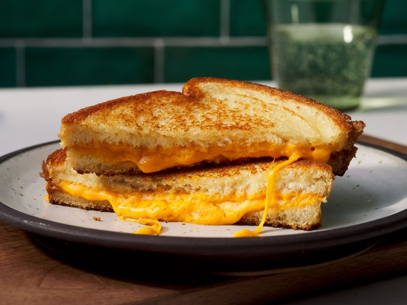

Home
Grilled Cheese Sandwich

Description
A classic grilled cheese sandwich made with white bread, melted Cheddar
cheese, and butter. A quick and easy meal with crispy, golden-brown bread
and a warm, gooey cheese filling.
Ingredients
- 4 slices white bread
- 3 tablespoons butter, divided
- 2 slices Cheddar cheese
Steps
- Gather all ingredients.
-
Preheat a nonstick skillet over medium heat. Generously butter one side
of each bread slice.
-
Place 1 slice of bread, butter-side down, in the hot skillet. Top with 1
slice of cheese.
-
Place another slice of bread, butter-side up, on top of the cheese.
-
Cook until lightly browned on one side. Flip and continue cooking until
the cheese is melted.
-
Repeat with the remaining bread and cheese slices. Serve and enjoy!